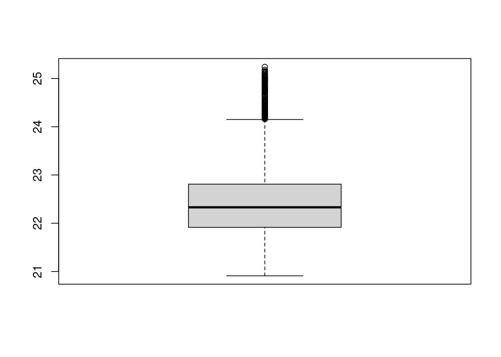

11 Simple Visualizations
11.1 Boxplots
- distribution of values
- great for comparisons

july = read.csv("data/2021-07_aasee.csv")
boxplot(july$Wassertemperatur)
summary(july$Wassertemperatur)## Min. 1st Qu. Median Mean 3rd Qu. Max.
## 20.91 21.91 22.33 22.45 22.81 25.24